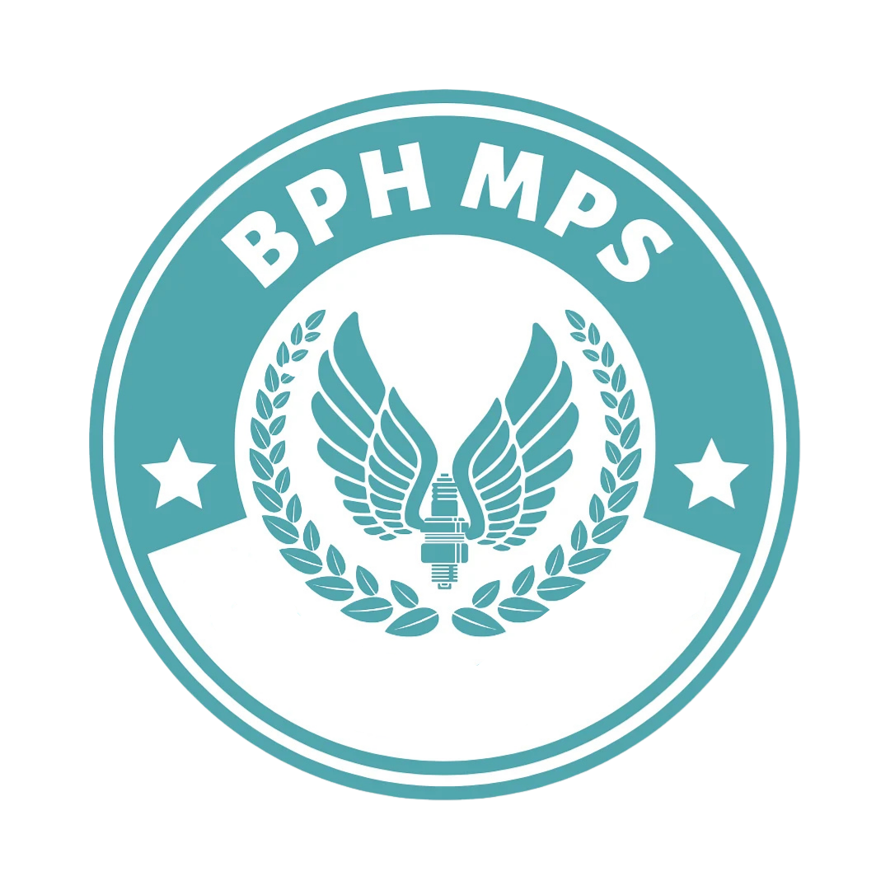
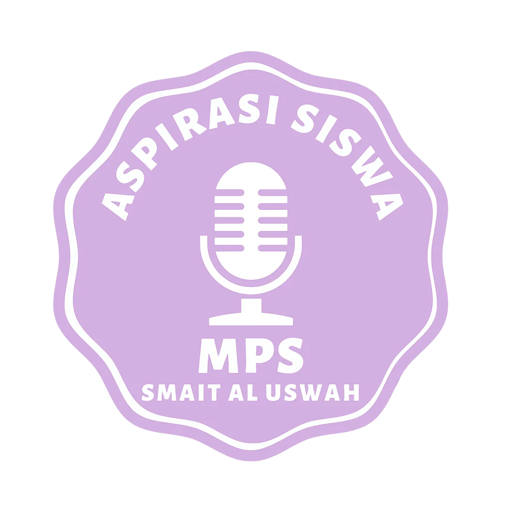

IT & Development
Fokus pada pengembangan perangkat lunak, keamanan siber, dan infrastruktur cloud.
Kami membangun ekosistem digital yang responsif, dinamis, dan mudah digunakan di semua perangkat Anda.
Lihat LayananPilih departemen untuk mengetahui lebih detail mengenai layanan kami.
Fokus pada pengembangan perangkat lunak, keamanan siber, dan infrastruktur cloud.

Mengelola rekrutmen, kesejahteraan karyawan, pelatihan, dan pengembangan talenta.

Merancang strategi pemasaran, manajemen media sosial, dan kampanye branding.

Memastikan alur kas sehat, manajemen anggaran, dan laporan keuangan perusahaan.
Majelis Perwakilan Siswa adalah organisasi berbasis legislatif sebagai kedaulatan tertinggi organisasi kesiswaan di SMAIT Al Uswah Surabaya. Bergerak di bidang pengawasan organisasi, penelitian untuk pengembangan, dan memperjuangkan aspirasi.
"Mewujudkan Majelis Perwakilan Siswa sebagai organisasi yang terpercaya, peduli, dan berkontribusi aktif dalam mendukung kemajuan bersama."
Pilih Komisi untuk mengetahui lebih detail mengenai komisi yang ada di MPS.

